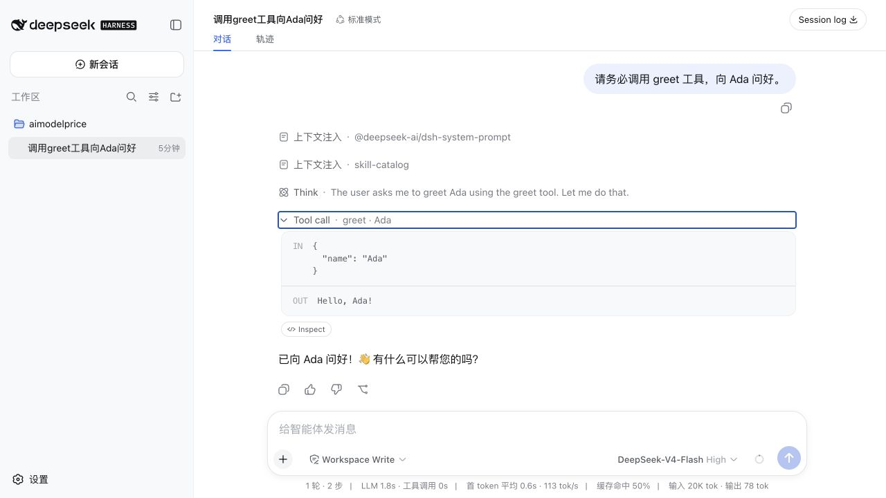

AGENT ENGINEERING / FIRST PLUGIN
一个只会说 Hello 的工具，看起来几乎没有产品价值。但当它被 DeepSeek Harness 调用，再被一个陌生目录从 npm 安装下来时，我第一次把插件开发的整条链路跑通了。
|
先说结果 2026 年 8 月 14 日，dsh-plugin-greet 0.1.0 发布到了 npm。它只注册一个 greet 工具，却完整经过了包分发、Profile 装配、工具注册、模型调用和公开发布。 |
我是一名还在摸索插件开发的初学者。刚看到 DeepSeek Harness 的插件系统时，脑子里有很多术语：Bundle、Profile、Cordis、工具 Schema、宿主进程。每个词单独查都能看懂，连起来却不知道代码该放在哪里，也不知道模型最后为什么能看到我的工具。
所以我没有一开始就做联网搜索、数据库查询或文件处理。我先选了一个小到不能再小的目标：传入一个名字，返回一句问候。如果名字是 Ada，结果就是 Hello, Ada!。
第一个插件最值得验证的，是每一个环节都确实发生过。
01 一个只做问候的工具，为什么值得发布
从功能上看，greet 没有必要做成插件。大模型自己就会说“你好”。这里要验证模型能否发现一个由外部代码注册的工具，按照约定生成参数，等待工具执行，再把返回值放回对话。只看一句自然语言，无法确认这条路径已经成立。
这条路径一旦成立，工具内部就可以逐步换成真实业务：查订单、跑 SQL、读取工单、触发构建或者调用公司的内部接口。复杂度会增加，插件进入 Harness 的方式并没有因此改变。
我给它保留了一个必填参数 name，并明确拒绝额外字段。执行函数还会再检查一次参数类型。这样的代码很短，但参数约束、错误处理和输出格式都没有省略。对后续插件来说，这些比问候语本身更能复用。
02 屏幕上的 Hello，来自一次实际工具调用
安装插件并启动 Web UI 后，我给模型发了一句很直接的话：“请务必调用 greet 工具，向 Ada 问好。”界面随后出现一条 Tool Call，输入区域显示 { "name": "Ada" }，输出区域显示 Hello, Ada!。

真实调用结果：模型生成参数，插件执行代码，结果再回到对话。
这张图解决了我之前最模糊的一点：插件工具有实际注册的名称、描述、JSON 参数结构和执行函数，不能用提示词里的能力说明代替。模型负责判断何时调用并提供参数，宿主负责执行代码，工具结果随后进入模型的上下文。插件只返回了 Hello, Ada!，截图下方的中文回复由模型继续组织。
如果参数缺失或类型错误，执行函数会抛出异常；如果模型不调用工具，也不会凭空出现 Tool Call。这个边界很重要。插件给模型增加了一条可操作路径，却没有保证模型每次都做出正确选择。
03 三个核心文件，怎样把工具送进 Harness
这个插件没有第三方依赖，也不需要构建。参与装配的核心文件只有三个，它们各做一件清楚的事。
|
package.json：声明如何分发 除了包名、版本和入口文件，它还通过 |
|
cordis.patch.yml：把插件插入 Profile 这份文件只有几行：创建一个 greet-tool 条目，并把模块名指向 dsh-plugin-greet。它把一个“已经下载的 npm 包”变成当前 Profile 里“需要加载的插件”。 |
|
index.js：注册并执行工具 插件通过 |
npm package → Bundle patch → Profile entry → Cordis plugin → tools.register() → model tool call
我后来再看这套结构，感觉它的优点是职责分得很细。分发信息、装配信息和运行逻辑互相独立。以后工具变复杂，可以继续扩展 index.js；需要换 Profile 装配方式时，调整 patch；发布新版本则由 package.json 管理。
04 最费时间的部分，发生在代码写完以后
greet 的执行逻辑只有几行，写完以后，大部分时间花在环境和发布上。为了排除版本漂移，我把这次开发和发布环境固定到 Node 22.22.3；随后又遇到了 HTTPS 证书错误、npm 镜像与官方 registry 不一致，以及 npm 发布权限的问题。插件本身没有声明 Node 最低版本，这个数字只代表本次验证环境。
证书错误最容易诱导新手直接关闭 TLS 校验。这样可能暂时绕过报错，却会让包下载和登录失去应有的身份校验。更稳妥的处理方式是确认 Node 版本、CA 证书和网络代理，再用 strict-ssl=true 重新验证连接。
另一个容易混淆的地方是 GitHub 仓库、GitHub Packages 和 npmjs.com。公开源码仓库并不会自动生成 npm 包。GitHub Packages 还需要作用域和单独的 registry 配置。这个插件面向公开安装，所以最终选择了最普通的 npmjs.com，包名也保留为 dsh-plugin-greet。
第一次执行 npm publish 时，npm 因账号没有开启双重验证（2FA）而拒绝发布。开启 2FA、通过浏览器确认后，终端才返回 + dsh-plugin-greet@0.1.0。这一道阻拦并不多余：npm 包会在陌生人的机器上执行，发布身份需要比普通网页登录更严格。
发布流程也是插件设计的一部分。版本、来源、身份验证和可回退性，都在决定别人敢不敢安装它。
05 现在，任何人都可以安装并验证
如果本地已经可以运行 DeepSeek Harness，先停止当前进程，再把固定版本安装到 web Profile：
npx @deepseek-ai/dsh plugin --profile web add dsh-plugin-greet@0.1.0
如果电脑长期使用第三方 npm 镜像，新包尚未同步时，可以只对这次命令指定 npm 官方 registry：
NPM_CONFIG_REGISTRY=https://registry.npmjs.org \ npx @deepseek-ai/dsh plugin --profile web add dsh-plugin-greet@0.1.0
安装后可以先打印最终配置，再启动 Web UI：
npx @deepseek-ai/dsh --profile web --dump-config npx @deepseek-ai/dsh web
打开 http://127.0.0.1:3080，输入“请务必调用 greet 工具，向 Ada 问好”。能在界面中看到参数和输出，才算完成验证。只看到模型自己说了一句“你好”，不能证明插件已经加载。
需要卸载时，运行下面这条命令即可：
npx @deepseek-ai/dsh plugin --profile web remove dsh-plugin-greet
06 它仍然只是一个社区示例
需要说明的是，dsh-plugin-greet 不是 DeepSeek AI 官方插件。它是一个采用 MIT 许可的社区示例。DeepSeek Harness 仍处于 Developer Preview，后续接口和装配方式可能变化；仓库 README 记录的测试口径是 2026 年 8 月 14 日、@deepseek-ai/dsh 0.1.0-rc.6。
Harness 插件运行在宿主进程中，能够接触到哪些资源，取决于宿主权限和插件代码。因此，安装第三方插件前应该查看源码；稳定使用时固定明确版本，避免直接跟随不断变化的 main 分支。0.1.0 发布后也不能原地覆盖，下一次修改必须使用 0.1.1 或更高版本。
对我来说，这个小插件的意义已经完成：我知道代码该放在哪里，知道 Profile 如何加载它，知道怎样观察模型调用，也知道怎样把测试过的产物交给 npm。下一步再做有实际用途的工具时，我会在这条已验证的路径上增加业务逻辑、超时处理、权限说明和自动化测试。
如果你也想写第一个插件，可以从这个仓库开始：先替换工具名称和参数 Schema，再修改 execute 函数；用本地目录安装，确认界面出现 Tool Call；最后再决定是否发布。功能可以很小，验证过程必须具体。
|
项目地址 |
参考资料
1. npm，dsh-plugin-greet 0.1.0 包页面，访问时间：2026-08-14。
https://www.npmjs.com/package/dsh-plugin-greet
2. GitHub，0lidaxiang/dsh-plugin-greet 源码仓库，访问时间：2026-08-14。
https://github.com/0lidaxiang/dsh-plugin-greet
3. GitHub，deepseek-ai/deepseek-harness 源码仓库，访问时间：2026-08-14。
https://github.com/deepseek-ai/deepseek-harness
————————
公众号：荒岛书生 codedoctor
视频号：荒岛书生 codedoctor
小红书：codedoctor
|
每天对着麦克风和 Claude / Codex AI 智能体交流的程序员。 |